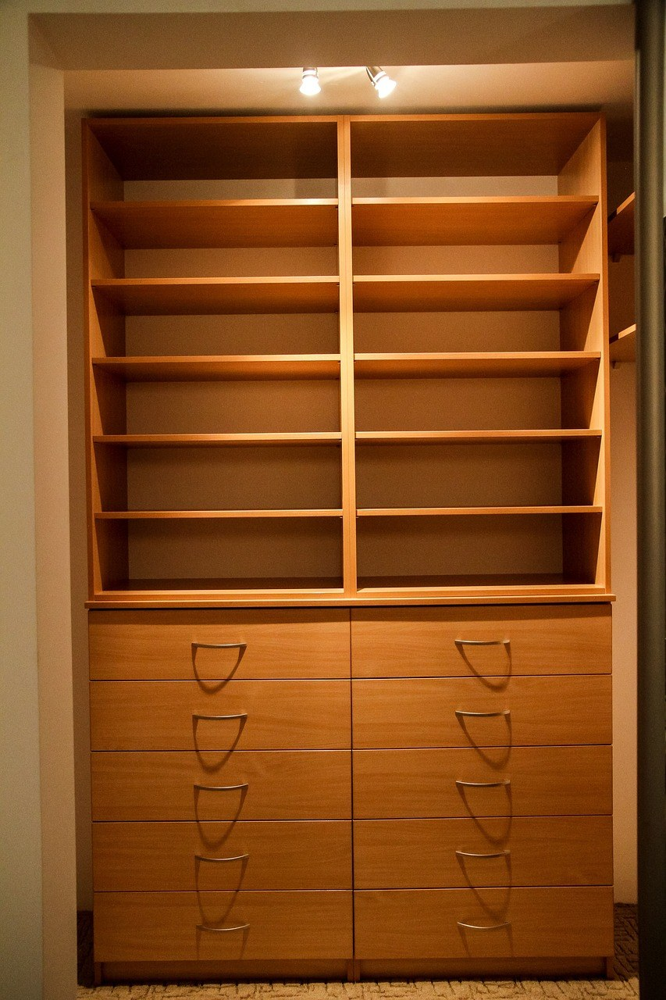
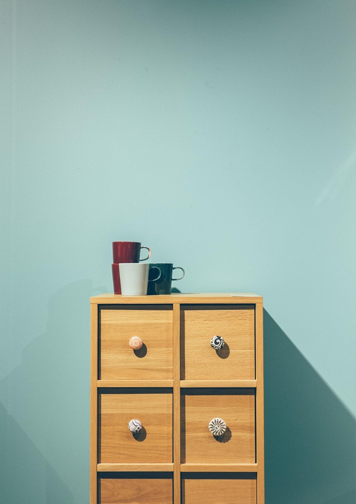
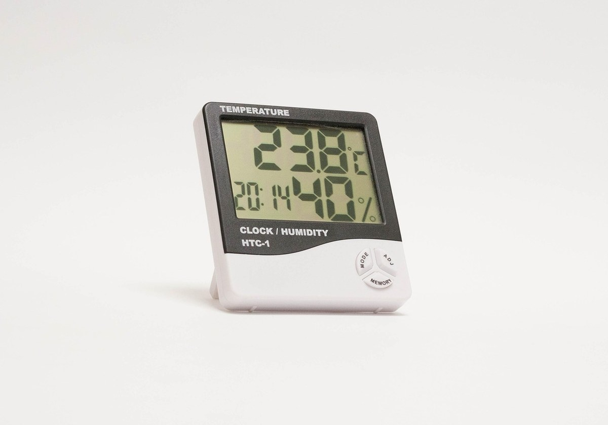

[사진 1: 썸네일]
창문에 물방울이 맺히기 시작하면 옷장 안도 함께 눅눅해져요. 꺼낸 코트에서 퀴퀴한 냄새가 나면 그제야 제습제를 찾게 되는데, 통형·걸이형·봉지형까지 종류가 많아 헷갈려요.
옷장 제습제는 대부분 염화칼슘 아니면 실리카겔이에요. 오늘은 옷장 제습제 염화칼슘 실리카겔 차이를 표로 비교하고, 우리 집 어느 공간에 무엇이 맞는지, 언제 바꿔야 하는지까지 정리해 드릴게요.
두 가지는 습기를 잡는 방식이 달라요. 염화칼슘은 습기를 빨아들이면서 스스로 녹아 액체가 되고, 실리카겔은 작은 구멍이 많은 알갱이 표면에 습기를 붙잡아 모양이 그대로 남아요.
그래서 염화칼슘은 흡습력이 강한 대신 물이 고이고, 실리카겔은 깔끔하지만 같은 양이면 잡는 습기가 적은 편이에요.
| 구분 | 염화칼슘 | 실리카겔 |
|---|---|---|
| 습기 잡는 힘 | 강한 편 | 상대적으로 약한 편 |
| 다 쓴 뒤 모습 | 통 안에 물이 고임, 알갱이가 녹음 | 알갱이 그대로, 지시약 제품은 색이 변함 |
| 흘림·얼룩 걱정 | 쏟으면 옷·금속에 얼룩·부식 | 거의 없음 |
| 재사용 | 어려움(다 차면 교체) | 열로 말려 다시 쓰는 제품 있음 |
| 잘 맞는 곳 | 옷장 아래, 붙박이장 구석, 다용도실 | 서랍, 가방, 신발 안, 보관함 |
[사진 2]
📷 [직접 찍은 사진 넣기: 옷장 바닥 구석이나 벽에 붙은 쪽 안쪽을 비춘 모습(제습제 둘 자리)]
북향 방이나 외벽에 붙은 붙박이장처럼 겨울에 결로가 잘 생기는 곳은 습기 양이 많아요. 이런 공간에는 흡습력이 강한 염화칼슘 통형이나 걸이형이 잘 맞아요.
습한 공기는 아래쪽에 머물기 쉬워서, 통형은 옷장 바닥 구석에 두고 걸이형은 옷 사이에 걸어 주면 좋아요. 다만 옷장 문을 하루에도 몇 번씩 열면 바깥 습기가 계속 들어와 효과가 줄어드니, 맑은 날엔 문을 열어 환기도 함께 해 주세요.
[사진 3]
서랍장, 가방 속, 신발 안, 계절 옷을 넣은 리빙박스처럼 좁고 닫힌 공간은 습기 양이 많지 않아요. 이런 곳에 물이 차는 제습제를 넣으면 쓰러졌을 때 내용물이 쏟아질 수 있어 실리카겔이 더 편해요.
색이 변하는 지시약형을 고르면 교체 시기를 눈으로 알 수 있어요. 열로 말려 다시 쓸 수 있다고 표시된 제품은 설명서에 적힌 방법과 온도대로만 말려 주세요.
[사진 4]
📷 [직접 찍은 사진 넣기: 집에 있는 제습제 통 옆면·뒷면의 교체 시기 안내 문구를 가까이 찍은 모습]
염화칼슘 통형은 위쪽 알갱이가 다 녹아 젤리처럼 되거나 물이 표시선까지 차면 바꿀 때예요. 사용 기간은 집 습도와 계절에 따라 크게 달라지니, 날짜보다 통 안 상태를 기준으로 보세요.
실리카겔은 지시약 색이 바뀌었는지가 기준이에요. 통 옆면이나 포장 뒷면에 제품별 교체 기준이 적혀 있으니 처음 둘 때 읽어 두세요.
Q. 옷장 제습제는 몇 개 넣어야 하나요?
A. 옷장 크기와 습도에 따라 달라서 정해진 개수는 없어요. 제품 포장에 적힌 권장 공간을 먼저 보고, 습기가 많은 아래 칸과 벽 쪽부터 하나씩 늘려 보세요.
Q. 제습제만 넣으면 곰팡이가 안 생기나요?
A. 제습제는 닫힌 공간의 습기를 덜어 줄 뿐이에요. 옷장을 벽에서 조금 띄우고, 젖은 옷은 완전히 말린 뒤 넣고, 맑은 날 문을 열어 환기하는 것을 함께 해야 효과가 커요.
Q. 고인 물은 어떻게 버리나요?
A. 제품 포장의 버리는 방법을 먼저 따르세요. 보통 고무장갑을 끼고 뚜껑을 열어 변기나 배수구에 붓고 물을 충분히 흘려보낸 뒤, 통은 분리배출 표시에 맞춰 버려요.
정리하면, 습기가 많은 옷장 아래와 붙박이장 구석은 염화칼슘, 서랍·가방·신발처럼 좁고 쏟아지면 곤란한 곳은 실리카겔이 잘 맞아요. 옷장 제습제 염화칼슘 실리카겔 차이를 알고 공간별로 나눠 두세요.
여러분 집에서 가장 눅눅한 곳은 옷장, 신발장, 다용도실 중 어디인가요? 댓글로 알려 주시면 그 공간에 맞는 습기 관리법도 정리해 볼게요.
인스타그램 @todayzip.info 에서 살림 꿀팁을 30초 영상으로도 볼 수 있어요.